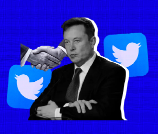

Home
Weapons
Music
Healthcare
References
Feedback
Home

Elon Musk Takes Twitter, and Tech Deals, to Another Level
Read more
Today's News
U.S. tech giants face pressure from Europe's telcos to pay for building the internet
Big Tech layoffs could hurt Americans, but the 'worst is still on the way': tech insider
Finally! Elon Musk Closes Deal to Acquire Twitter, Ethereum Becomes the First Google-Backed
Protocol, the tech-news focused website, will shutter and lay off its entire staff